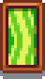

'Dancing Grass'
Jump to navigation
Jump to search
| 'Dancing Grass' | |
 | |
| This furniture can't be placed outdoors. | |
| Information | |
| Source | Price |
| Sell Price | Cannot be sold |
'Dancing Grass' is a piece of furniture that hangs on a wall. It can rotate into daily stock at the Carpenter's Shop for  400g or the Traveling Cart for between
400g or the Traveling Cart for between  250–2,500g.
250–2,500g.
It's also available from the Furniture Catalogue for  0g.
0g.
History
- 1.0: Introduced.